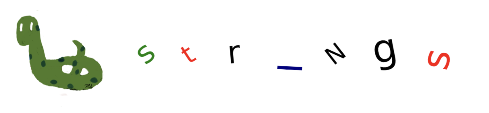
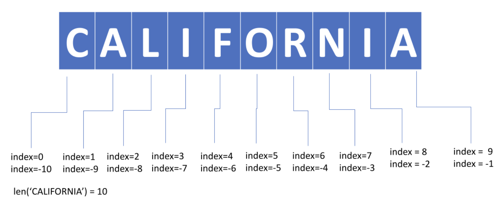
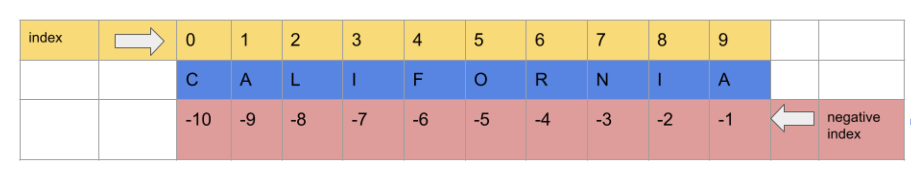
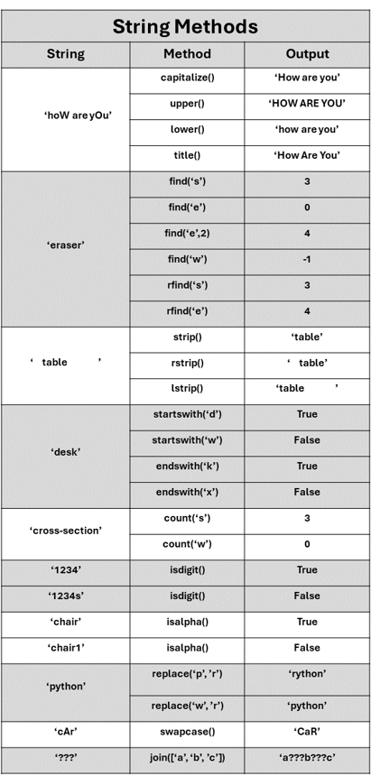

Chp-4: Strings#

Chapter Objectives
By the end of this chapter, the student should be able to:
Define strings and use them to represent textual data in Python.
Declare strings using single quotes, double quotes, or triple quotes
Perform string manipulation operations including concatenation, slicing, and indexing.
Use built-in string methods in Python.
Use f-strings for formatting strings.
Use escape sequences to control whitespace characters in printed output.
Examine encoding schemes such as ASCII and Unicode.
Perform string operations such as concatenation and repetition.
Access individual characters or substrings in a string using indexing and slicing.
Recognize the immutability of string.
Solve real-world problems, such as parsing strings.
Create Strings#
Strings are ordered sequences of characters. There are several ways to create strings:
Single quotes:
'text'Double quotes:
"text"Triple single quotes:
'''text'''Triple double quotes:
"""text"""
A space is also a character that can be in a string. Triple single and double quotes are used to create strings spanning multiple lines.
# Single quotes
name = 'Mary'
# Double quotes
name = "Mary"
# Triple single quotes
name = '''Mary'''
# Triple double quotes
name = """Mary"""
Double single/double quotes cannot be used to create strings.
# ERROR: Double single quotes.
name = ''Mary''
# ERROR: Double double quotes.
name = ""Mary""
If a single quote is a character in the string, using single quotes to create the string is an error. This is because the character single quote will end the creation of the string.
It behaves like the second single quote, instead of being a character in the string.
You can use double quotes to create the string to overcome the confusion. Alternatively, you can use escaping characters.
# ERROR
'Mary's book.'
In the code above, the second single quote ends the creation of the string.
The
s book.'part causes the error because it has only one single quote.If you use double quotes, then there will not be any problem.
# no ERROR
sentence = "Mary's book."
# ERROR
"Mary said "I am here"."
In the code above, the second double quote ends the creation of the string.
The
I am herepart causes the error because it is not enclosed by single or double quotes.If you use single quotes, then there will not be any problem.
# no ERROR
sentence = 'Mary said "I am here".'
Single/Double quotes cannot be used with strings spanning more than one line.
# ERROR: Multiple lines.
name = 'John
Steinbeck'
print(x)
# ERROR: Multiple lines.
name = "John
Steinbeck"
Triple single/double quotes are used to create strings with multiple lines.
# no ERROR
name = '''John
Steinbeck'''
# no ERROR
name = """John
Steinbeck"""
Escaping characters#
An escape character is a backslash \ followed by a character. It is used to write special characters in a string.
\': Single quote (apostroph)\": Double quote\n: New line\t: Tabulation\b: Backspace\\: Backslash\r: Carriage return
# \' is the character '
print('Mary\'s book.')
Mary's book.
# \" is the character "
print("Mary said \"I am here\".")
Mary said "I am here".
# \n is a new line
print('John\nSteinbeck')
John
Steinbeck
In the following code, ‘\t’ inserts 4 spaces because after ‘John’, there are 4 more spaces until the next tab stop, which occurs at the 8th character.
# \t is a tab
print('John\tSteinbeck')
print('John'+' '*4+'Steinbeck')
John Steinbeck
John Steinbeck
In the following code, ‘\t’ inserts 7 spaces because ‘Steinbeck’ has 9 characters and there are 7 more spaces until the next tab stop, which occurs at the 16th character.
print('Steinbeck\tJohn')
print('Steinbeck'+' '*7+'John')
Steinbeck John
Steinbeck John
\b (backspace) moves one character back, deleting the preceding character.
print('John\b Steinbeck')
Output: Joh Steinbeck
\b\b (two backspaces) moves two characters back, deleting the preceding two characters.
print('John\b\b Steinbeck')
Output: Jo Steinbeck
# \\ is the \ (backslash) character
print('John\\ Steinbeck')
John\ Steinbeck
Raw Strings#
Each character in a raw string has no special meaning; they are just characters.
It is created using
rin front of the string:r'text'In the example below,
\t,\n,\',\"have no special meanings; they are just characters\, t, n,',"
# \t means two characters, \ and t.
# \t does not mean a tab in a raw string
text = r'Good \t bye.'
print(text)
Good \t bye.
text = r'Hello.\t my name\n is Tom. I am\' from\" England.'
print(text)
Hello.\t my name\n is Tom. I am\' from\" England.
f-strings#
It is a great way to combine constants and variable values.
It is in the form of:
f'text {variable} text'Variables are enclosed in curly brackets
{variable}called placeholders.An f-string generates a new string.
You can also perform rounding or algebraic operations within curly brackets.
It is much easier to use f-strings than comma-separated values in a print() function.
name = 'Tom'
country = 'Spain'
age = 25
weight = 173.6294
You can compare the next two cells below to see the advantage of using f-strings.
# using an f-string
print(f'My name is {name}.')
My name is Tom.
# using comma separated values
print('My name is ', name, '.', sep='')
My name is Tom.
# using an f-string
text = f'My name is {name}.' # text is a string
print(text)
My name is Tom.
# multiple placholders
print(f'My name is {name} and I am from {country}. I am {age} years old.')
My name is Tom and I am from Spain. I am 25 years old.
Algebraic operations can be performed inside curly brackets
print(f'I will be {age+1} years old next year.')
I will be 26 years old next year.
Rounding can be performed inside curly brackets
# round() function
print(f'My weight is {weight}.')
print(f'My rounded weight is {round(weight,2)}.')
My weight is 173.6294.
My rounded weight is 173.63.
# rounding by a different way
print(f'My weight is {weight}.')
print(f'My rounded weight is {weight:.2f}.') # 2 means second decimal place (hundredth), f means float
My weight is 173.6294.
My rounded weight is 173.63.
Unicode Characters#
These are symbols, accented letters, non-Latin characters, and emojis—kind of different characters.
You can find the list of Unicode characters on the official website of Unicodes.
Each Unicode character has a code that is unique to it.
You can search for a specific Unicode code from the Unicode character charts.
If the code has four characters, use
\uXXXXwhere XXXX is the code.
If a code has four characters or more, pad it with 0 from the left to make the length of the code eight and use:
\Uxxxxxxxxwhere xxxxxxxx is the 0-padded code.
Example: If the Unicode is 1F639, three zeros are added to the left.
print('\U0001F639')
😹
Example: If the Unicode is 1F602, three zeros are added to the left.
print('\U0001F602')
😂
Example: If the Unicode is 2764, no padding is necessary.
print('\u2764')
❤
Example: Padding can also be applied if the Unicode is 2764.
print('\U00002764')
❤
Operations on strings#
Concatenation#
The + operator is used to concatenate two strings.
String + String: combines two strings.
x = 'John'
y = 'Steinbeck'
# concatenation of x and y
author = x+y
print(author)
JohnSteinbeck
A single space
' 'can be inserted between x and y.
name = x + ' ' + y
print(name)
John Steinbeck
Repetition#
The * operator is used to repeat a string a certain number of times.
String * IntegerorInteger * Stringmakes copies of the string Integer many times.Floats cannot be used for repetitions.
# four copies of x
x = 'John'
fourjohns = x*4
print(fourjohns)
JohnJohnJohnJohn
In the following code, there is an error due to the attempt to use the float value 4.3 in a repetition operation.
# ERROR: float * str
4.3*'Hi'
Example: Forming a triangle pattern with the ‘$’ character using repetitions.
print('$')
print('$'*2)
print('$'*3)
print('$'*4)
print('$'*5)
print('$'*6)
print('$'*7)
$
$$
$$$
$$$$
$$$$$
$$$$$$
$$$$$$$
Example: Forming a triangle pattern with the ‘$’ and space characters using repetitions.
print(' '*6+'$')
print(' '*5+'$'*2)
print(' '*4+'$'*3)
print(' '*3+'$'*4)
print(' '*2+'$'*5)
print(' '*1+'$'*6)
print(' '*0+'$'*7) # no need for the space
$
$$
$$$
$$$$
$$$$$
$$$$$$
$$$$$$$
Length Function#
The built-in len() function returns the number of characters in a string.
The space ‘ ‘ is a character.
Escaping characters such as ‘\n’ and ‘\t’ are counted as single characters.
Example: The string ‘hello’ contains 5 characters.
print(len('hello'))
5
Example: The string ‘hel lo’ contains 6 characters, including the space.
print(len('hel lo'))
6
Example: The string ‘hel\nlo’ contains 6 characters, including the newline character.
print(len('hel\nlo'))
6
String Indexing#
Indexing is used to access individual characters or sets of characters.
Indexing starts with zero.
The index of the first character is 0.
The index of the second character is 1, and so on.
The index is written in square brackets: string[index].
Negative numbers can also be used for indexing.
The index of the last character is -1.
The index of the second character from the end is -2, and so on.

index of
Cis 0 or -10index of
first Ais 1 or -9index of
second Ais 9 or -1
Warning: There is a character with index -10 (the second ‘A’), but there is no character with index positive 10 because indexing starts with 0, and it does not reach 10, which is the length of the string.
For any string, there is no character with an index equal to the length of the string.
state = 'CALIFORNIA'
# character at index 0
print(state[0])
C
# character at index 6
print(state[6])
R
# character at index -1
print(state[-1])
A
# character at index -3
print(state[-3])
N
There is an error in the following code because there is no character with index 10.
# ERROR: out of range
state[10]
The length of state is 10, and there is an error in the following code. This applies to all strings.
# ERROR: out of range
state[len(state)]
There is no error in the following code because
len(state) - 1= 9 is the index of the last character.
print(state[len(state)-1])
A
String Slices#
You can access more than one character of a string by using index numbers.
It is in the form of
string[start: end]with inclusive start and exclusive end.Use
:(colon) inside square brackets between the start and end indexes.It consists of characters starting with index start up to the character with index end-1.
The character with index end is not included.
It returns a substring.
Examples:
string[2:5]returns characters with indexes 2, 3, 4 (5 is not included).string[-4:-1]returns characters with indexes -4, -3, -2 (-1 is not included).

state = 'CALIFORNIA'
print(state[2:5]) # index=2,3,4
LIF
state = 'CALIFORNIA'
print(state[-4:-1]) # index=-4,-3,-2
RNI
Default start and end values:
string[:end]: the default value of start is 0, which means it starts from the very beginning.For example,
string[:5]returns characters with indexes 0, 1, 2, 3, 4 (5 is not included).
string[start:]: the default value of end is the length, which means it goes all the way to the end.For example,
string[2:]returns characters with indexes 2, 3, 4, 5, 6, 7, 8, 9 (all characters starting from index 2).
string[:]: starting from the very beginning and going all the way to the end, representing the whole string.
state = 'CALIFORNIA'
print(state[2:]) # index = 2,3,4,5,6,7,8,9
LIFORNIA
state = 'CALIFORNIA'
print(state[:5]) # index = 0,1,2,3,4
CALIF
state = 'CALIFORNIA'
print(state[:]) # index = all of them = 0,1,2,...,9
CALIFORNIA
Step parameter
Slicing can also be done by taking steps in the form of: string[start: end: step].
string[start: end: step]means starting with the character at index = start up to the character at index = length - 1, as before, but not necessarily including all characters between them.The first index is start, the second index is start + step, and the third index is start + 2 * step.
It continues in this way, but the largest index can be at most length - 1.
stepcan also be considered as an increment, but it can also be a negative number.The default value of step is 1.
state = 'CALIFORNIA'
print(state[2:7:2]) # index = 2,2+2=4, 4+2=6
LFR
state = 'CALIFORNIA'
print(state[1:8:3]) # index = 1,1+3=4, 4+3=7
AFN
state = 'CALIFORNIA'
print(state[7:2:-2]) # index = 7,7+(-2)=5,5+(-2)=3
NOI
state = 'CALIFORNIA'
print(state[-8:-2:3]) # index = -8, -8+3=-5
LO
Warning:
For negative step default value of start is 9 (-1)
For negative step default value of end is 0 (-10)
state = 'CALIFORNIA'
print(state[::-1]) # index = 9,8,...,0
AINROFILAC
state = 'CALIFORNIA'
print(state[-3::-1]) # index = -3,-4,...,-10
NROFILAC
state = 'CALIFORNIA'
print(state[:-4:-1]) # index = 9,8,7 or -1,-2,-3
AIN
String module#
It contains functions to process strings, as well as some constants.
Use
help(string)for more explanations.
# constants and functions
import string
print(dir(string))
['Formatter', 'Template', '_ChainMap', '__all__', '__builtins__', '__cached__', '__doc__', '__file__', '__loader__', '__name__', '__package__', '__spec__', '_re', '_sentinel_dict', '_string', 'ascii_letters', 'ascii_lowercase', 'ascii_uppercase', 'capwords', 'digits', 'hexdigits', 'octdigits', 'printable', 'punctuation', 'whitespace']
# lowercase letters
print(string.ascii_lowercase)
abcdefghijklmnopqrstuvwxyz
# lowercase and uppercase letters
print(string.ascii_letters)
abcdefghijklmnopqrstuvwxyzABCDEFGHIJKLMNOPQRSTUVWXYZ
# digits
print(string.digits)
0123456789
# punctuations
print(string.punctuation)
!"#$%&'()*+,-./:;<=>?@[\]^_`{|}~
Immutable#
Strings are immutable, which means they cannot be modified.
For example, if you try to change the first character of ‘CALIFORNIA’, you will get an error message.
# ERROR: try to change the first character of state
state = 'CALIFORNIA'
state[0] = 'R'
You can use the state variable to produce a new string without changing the original one. In the following code:
The value of the variable new_state is the concatenation of the string ‘R’ and a slice of state starting from the character at index 1 and continuing to the end.
state = 'CALIFORNIA'
new_state = 'R' + state[1:]
print(new_state)
RALIFORNIA
In the following code, a new value is assigned to the variable state. The string ‘CALIFORNIA’ is not modified.
state = 'CALIFORNIA'
state = 'R' + state[1:]
print(state)
RALIFORNIA
in and not in#
These operators are used to check if a character or slice is present in a string.
They return a boolean value: True or False.
Python is case-sensitive.
print( 'a' in 'FLORIDA' ) # 'a' is not in FLORIDA
False
print( 'a' not in 'FLORIDA' ) # 'a' is not in FLORIDA
True
print( 'A' in 'FLORIDA' ) # 'A' is in FLORIDA
True
print( 'A' not in 'FLORIDA' ) # 'A' is not in FLORIDA
False
print( 'ORI' in 'FLORIDA' ) # 'ORI' is in FLORIDA
True
print( 'ORI' not in 'FLORIDA' ) # 'ORI' is not in FLORIDA
False
String Methods#
String methods do not modify the original string because strings are immutable.
String methods return a new value.
If you run
dir(str), you will see that there are many methods because there can be so many things that can be done with strings.We will cover some of them here, but you can check
help(str)for more details.
print(dir(str))
['__add__', '__class__', '__contains__', '__delattr__', '__dir__', '__doc__', '__eq__', '__format__', '__ge__', '__getattribute__', '__getitem__', '__getnewargs__', '__getstate__', '__gt__', '__hash__', '__init__', '__init_subclass__', '__iter__', '__le__', '__len__', '__lt__', '__mod__', '__mul__', '__ne__', '__new__', '__reduce__', '__reduce_ex__', '__repr__', '__rmod__', '__rmul__', '__setattr__', '__sizeof__', '__str__', '__subclasshook__', 'capitalize', 'casefold', 'center', 'count', 'encode', 'endswith', 'expandtabs', 'find', 'format', 'format_map', 'index', 'isalnum', 'isalpha', 'isascii', 'isdecimal', 'isdigit', 'isidentifier', 'islower', 'isnumeric', 'isprintable', 'isspace', 'istitle', 'isupper', 'join', 'ljust', 'lower', 'lstrip', 'maketrans', 'partition', 'removeprefix', 'removesuffix', 'replace', 'rfind', 'rindex', 'rjust', 'rpartition', 'rsplit', 'rstrip', 'split', 'splitlines', 'startswith', 'strip', 'swapcase', 'title', 'translate', 'upper', 'zfill']
capitalize()#
Produces a duplicate of the string where only the initial character is in uppercase, while all other characters are converted to lowercase.
text = 'tOm aNd jerRy.'
print(text.capitalize()) # 't' is capitalized, a new string is produced
print(text) # no change on text (immutable)
Tom and jerry.
tOm aNd jerRy.
upper()#
Produces a duplicate of the string where all characters are converted to uppercase.
text = 'tOm aNd jerRy.'
print(text.upper()) # all characters are in uppercase
print(text) # no change on text (immutable)
TOM AND JERRY.
tOm aNd jerRy.
lower()#
Produces a duplicate of the string where all characters are converted to lowercase.
text = 'tOm aNd jerRy.'
print(text.lower()) # all characters are in lowercase
print(text) # no change on text (immutable)
tom and jerry.
tOm aNd jerRy.
title()#
Produces a duplicate of the string where all words are capitalized.
text = 'tOm aNd jerRy.'
print(text.title()) # all words are capitalized
print(text) # no change on text (immutable)
Tom And Jerry.
tOm aNd jerRy.
find()#
It provides the earliest occurrence of a given substring within a string.
It returns the lowest index.
If the substring is not present, it returns -1.
Additionally, you have the option to begin the search from a specific character to find the index of the given substring.
find('a', N): find index of first ‘a’ starting from index=Ndefault value of N is 0
state = 'CALIFORNIA'
print(state.find('L')) # index of 'L' is 2
2
In the following code, the value -1 indicates that ‘W’ does not exist. It does not represent an index.
state = 'CALIFORNIA'
print(state.find('W'))
-1
state = 'CALIFORNIA'
print(state.find('A')) # index of first 'A'
1
In the following code, the find() method returns the index of the first occurrence of ‘A’, starting from the character at index 3.
state = 'CALIFORNIA'
print(state.find('A', 3))
9
# 'FOR' begins from the character at index 4.
state = 'CALIFORNIA'
print(state.find('FOR'))
4
# 'WE' does not exist in CALIFORNIA
state = 'CALIFORNIA'
print(state.find('WE'))
-1
rfind()#
It returns the maximum index in a string where the substring is located.
state = 'CALIFORNIA'
print(state.find('A')) # index of first 'A'
print(state.rfind('A')) # index of last 'A'
1
9
strip(), rstrip(), lstrip()#
strip(): Removes white spaces from the beginning and end of a string.rstrip(): Removes white spaces from the end of a string.lstrip(): Removes white spaces from the beginning of a string.
country = ' GERMANY '
print('---' + country + '---')
print('---' + country.strip() + '---') # white spaces on the left and right are removed
print('---' + country.rstrip()+ '---') # white spaces on the right are removed
print('---' + country.lstrip()+ '---') # white spaces on the left are removed
--- GERMANY ---
---GERMANY---
--- GERMANY---
---GERMANY ---
startswith()#
It returns True if the string starts with the specified prefix; otherwise, it returns False.
# 'CALIFORNIA' does not startswith 'H'
state = 'CALIFORNIA'
print(state.startswith('H'))
False
# 'CALIFORNIA' does startswith 'C'
state = 'CALIFORNIA'
print(state.startswith('C'))
True
endswith()#
It returns True if the string end with the specified prefix; otherwise, it returns False.
# 'CALIFORNIA' does not endswith 'H'
state = 'CALIFORNIA'
print(state.endswith('H'))
False
# 'CALIFORNIA' does endswith 'A'
state = 'CALIFORNIA'
print(state.endswith('A'))
True
count()#
Returns the number of non-overlapping occurrences of a substring within a string
# number of 'A's in 'CALIFORNIA'
state = 'CALIFORNIA'
print(state.count('A'))
2
# number of 'I's in CALIFORNIA'
state = 'CALIFORNIA'
print(state.count('I'))
2
# number of 'C's in 'CALIFORNIA'
state = 'CALIFORNIA'
print(state.count('C'))
1
# number of 'C's in 'CALIFORNIA'
state = 'CALIFORNIA'
print(state.count('W'))
0
isdigit()#
Returns True if the string consists of digits, False otherwise.
# not all characters are digits
print('hello'.isdigit())
False
# all characters are digits
print('123456'.isdigit())
True
# not all characters are digits
print('h1234'.isdigit())
False
isalpha()#
Returns True if the string consists of alphabetic characters, False otherwise.
# all characters are alphabetic
print('hello'.isalpha())
True
# not all characters are alphabetic
print('123456'.isalpha())
False
# not all characters are alphabetic
print('h1234'.isalpha())
False
replace()#
Returns a duplicate with all occurrences of the old substring replaced by the new one.
It is in the form of
replace(old, new)
print(state)
print(state.replace('A', 'W')) # replace 'A' by 'W'
CALIFORNIA
CWLIFORNIW
print(state)
print(state.replace('T', 'W')) # no 'T' to replace by 'W'
CALIFORNIA
CALIFORNIA
print(state)
print(state.replace('LI', '***')) # replace 'LI' by '***'
CALIFORNIA
CA***FORNIA
swapcase()#
Transform uppercase characters to lowercase and lowercase characters to uppercase.
name = 'aRThUr'
print(name)
print(name.swapcase()) # 'a' becomes 'A', 'R' becomes 'r', and so on
aRThUr
ArtHuR
join()#
Concatenate a list of strings.
Insert the string, whose method is called, between each given string.
Return the result as a new string.
Example:
'--'.join(['ab', 'pq', 'rs'])returns'ab--pq--rs'
print('--'.join(['ab', 'pq', 'rs']))
ab--pq--rs

Parsing Strings#
By using string methods, you can analyze a string and extract meaningful information about the string.
You can also perform specific operations based on the structure and content of the string.
Example:
From the given message below, extract the company name and capitalize it.
The company name is between the characters
@and.You can use the
find()method to find the indexes of these two characters.There are multiple
.characters, so we need to find the first one that comes after@.
message = 'Hello. My name is Tom. I live in California. My email address is tom@tesla.com. I will be in NY next week.'
index_at = message.find('@') # index of @
index_period = message.find('.', index_at) # index of first . after @
To extract the company name, we need to use slicing.
Slicing must start from
index_at + 1because if you start from index_at, the slice will include @.Slicing must end at
index_periodbecause the end index is not included.
print(message[index_at+1:index_period].capitalize())
Tesla